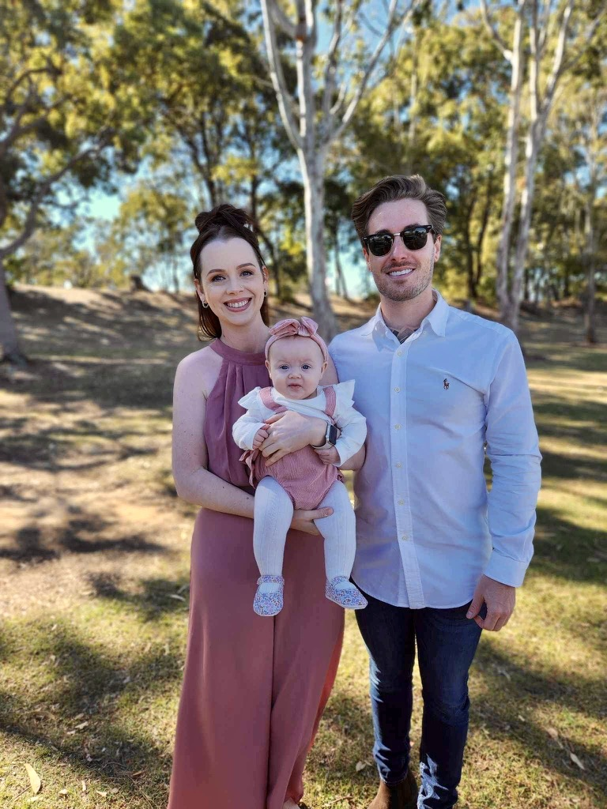

About Me
I'm a journeyman with a diverse background, shaped by a series of adventures and career pivots. Born and raised in the southside of Brisbane, I began my professional journey as an apprentice electrician. However, my path soon led me into the dynamic world of the mining industry, where I embraced the life of FIFO work.
In my early twenties, fueled by a relentless wanderlust, I embarked on a transformative journey across Europe with my closest school friends. We explored the continent's rich tapestry of cultures and made unforgettable memories, including three visits to Europe's largest music festival, Tomorrowland.
After concluding my overseas escapades and a rewarding stint in the mining sector, I ventured to Sydney, where I collaborated with the Waverly Council for two fulfilling years. Despite the bustling city life, I found myself yearning for the sunshine and warmth of Queensland. I returned to Toowoomba and embarked on a new chapter, trying my hand at landscaping, immersing myself in the artistry of outdoor spaces.
With both my parents thriving in the real estate industry in Hervey Bay, they encouraged me to explore the opportunities blossoming in the area. I heeded their advice, obtained my real estate license, and made the move. After a year in the Fraser Coast's real estate scene, I recognized the challenges posed by a highly competitive market in a small town.
Driven by my lifelong passion for technology and my deep knowledge of the field, I embarked on a new learning journey. Extensive research led me to the realm of cyber security and the tech industry. With a foundation built on curiosity and a genuine love for all things tech, it became clear that my future lay in coding and web development.
In December 2022, my life took another wonderful turn as I welcomed my beautiful daughter, Charlotte Grace, into the world. While parenting undoubtedly brings its unique set of challenges, I relish every moment of building a family with my gorgeous partner, Skye. Today, I'm excited to merge my unique experiences and technical aptitude to create innovative digital solutions and embark on a new adventure in the world of web development.
